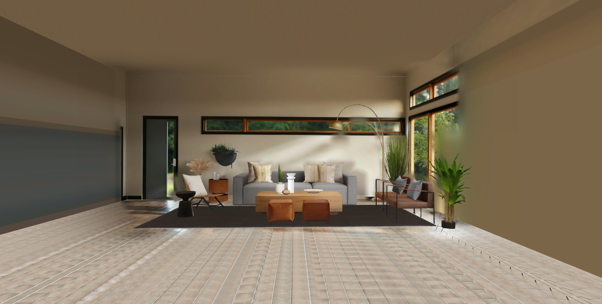
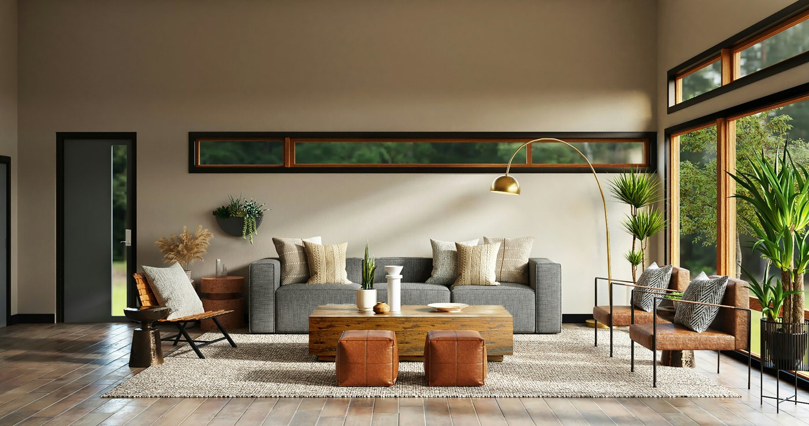
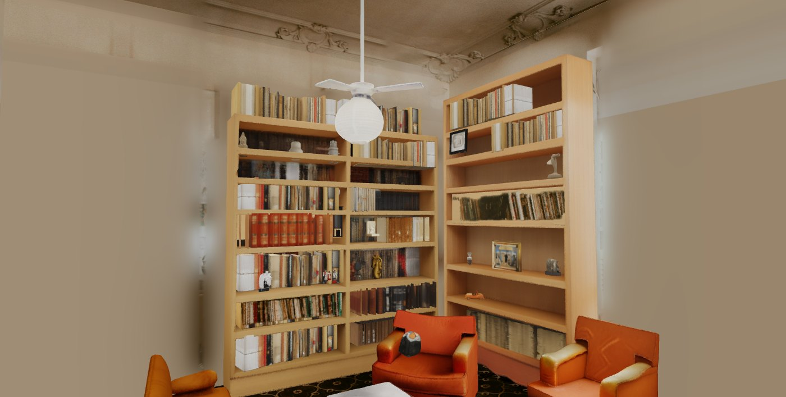
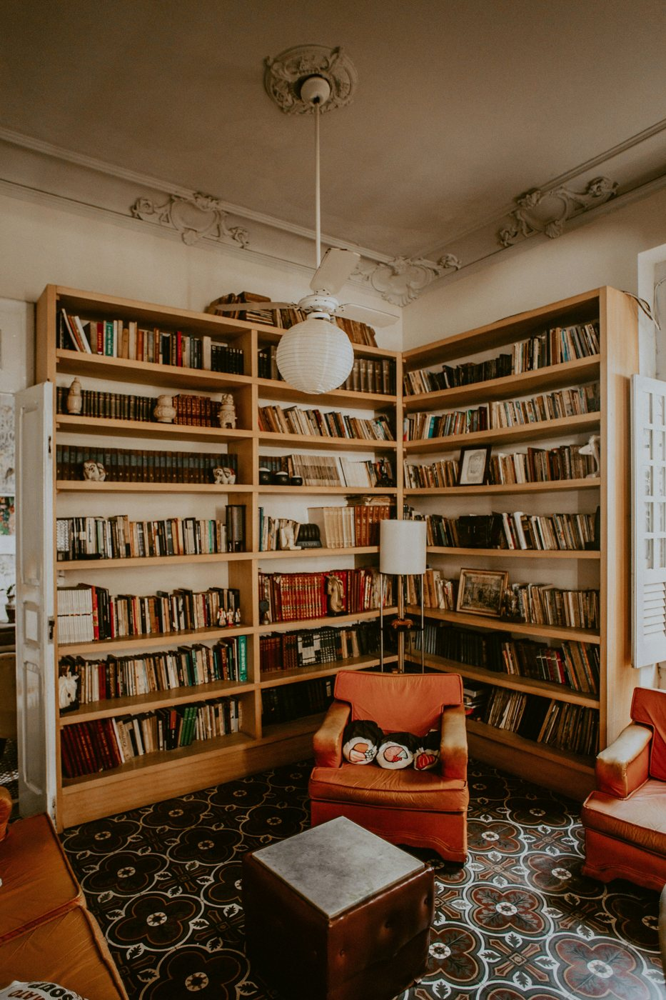
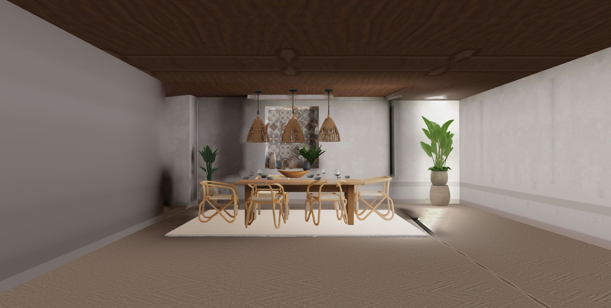
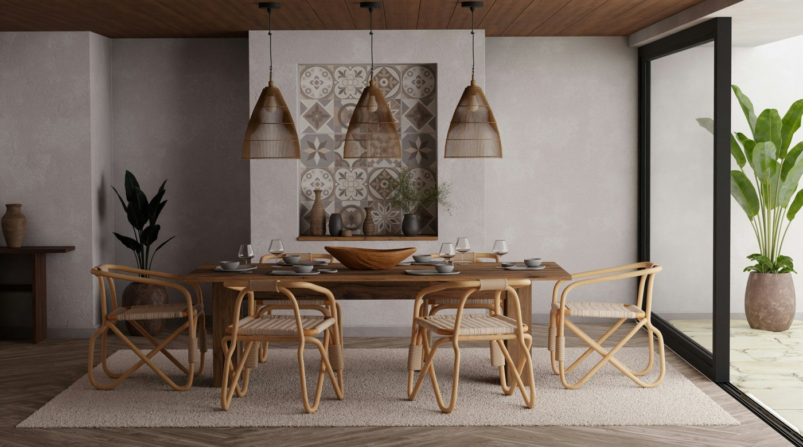

Convert a single photo to a modular 3D scene.
Each scene below was built by WorldBuilder from a single ordinary photo. Every element in it is a separate object. Open one to look around, hide objects, or compare it with the original photo in the corner.


3D sceneOriginal photo

3D sceneOriginal photo

3D sceneOriginal photoDrag to orbit, scroll to zoom, right-drag to pan. Click an object to select it, and use the list on the left to hide objects or the room.
Drag with one finger to orbit and pinch to zoom. Tap Objects for the list. Each scene is 20 to 40 MB, so Wi-Fi helps.
Open this page in the Meta Quest browser, pick a scene and press Enter VR. Left stick moves, right stick turns.